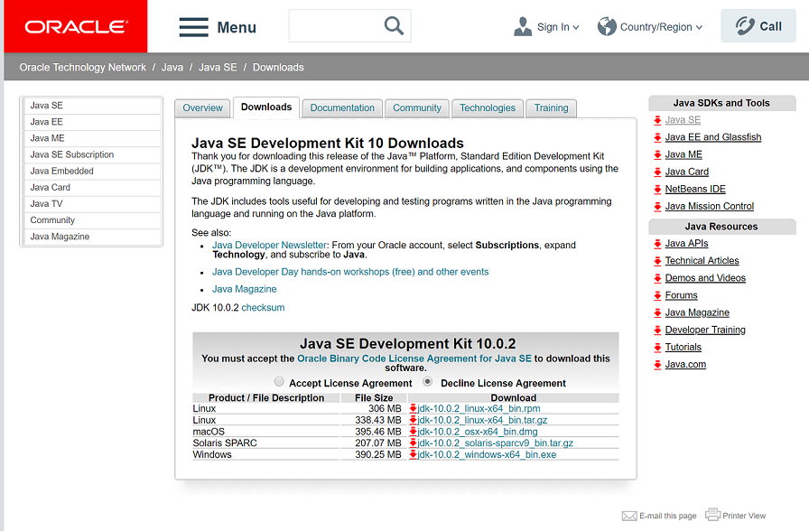
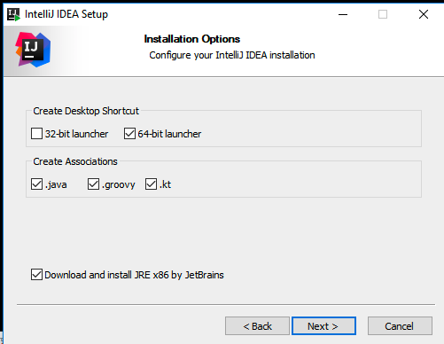
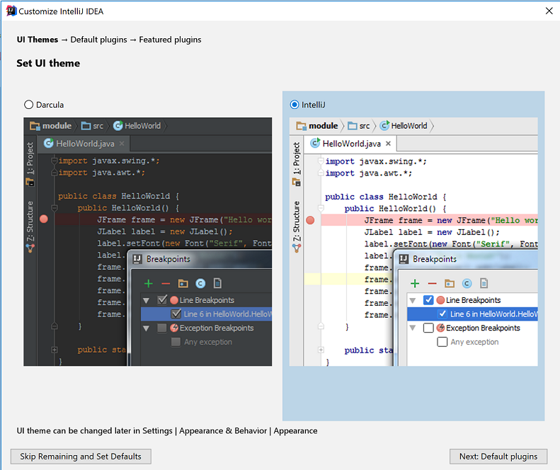
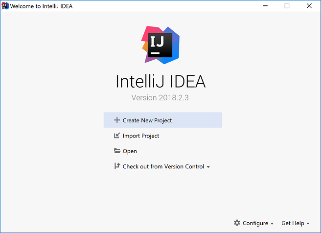

Objectives
Install JDK 10 + IntelliJ Idea (on own computer)
Preparation
NOTE: This entire lab is only for installing Java and IntelliJ on your own personal computers. If you are using the college computers, please move onto lab01b.
Command Prompt
Launch the command prompt:

In the next step, we will use this to verify that our Java10 JDK installed successfully.
Install Java JDK: Windows
Visit this page:
We are going to install JDK10, as this is the latest version that is installed on the college computers. This will make it easier to move your code between your own computer and the college machines.

Tick the radio button to accept their licence agreement.
If you are using windows, your download is likely to be for Windows 64 e.g.:
- jdk-10.0.2-windows-x64_bin.exe
Once the exe file is downloaded, follow the steps to install it on your computer.
To check if it is installed ok - you should type in the following command into the command prompt we opened earlier
java -versionIf your install was successful, you should get something like this:
C:\Users\Siobhan>java -version
java version "10.0.2" 2018-07-17
Java(TM) SE Runtime Environment 18.3 (build 10.0.2+13)
Java HotSpot(TM) 64-Bit Server VM 18.3 (build 10.0.2+13, mixed mode)
C:\Users\Siobhan>Install Java JDK: Mac
For the mac, the best way to install is to use Brew. These commands should do:
brew update
brew install jenv
brew cask install caskroom/versions/java10Getting the correct java version can be a challenge on mac.
Install IntelliJ Idea
To date we have been using Processing as our editor.
Now, we will move to a professional Java Integrated Development Environment (IDE) called IntelliJ Idea:
Before downloading, first create a new Jetbrains account:
Make sure to use your WIT email address, as this will allow you to gain access to the professional versions of all Jetbrains products.
Now proceed to download and install the Ultimate version of the Idea IDE:
At some stage in the below process, you will be prompted to log in...as you have already created your Jetbrains account, you can log in with your credentials then:

During installation, make sure the following options are selected during the install:

When the installation is completing, you may be asked to import settings...choose Do not import settings.
When the Licence Agreement appears, scroll to the bottom and click on the Accept button.
Then select your UI theme (See screen shot below) and then click the Skip Remaining and Choose Defaults button:

This should activate the application, and you will get to the opening screen (note, your version number might be slightly higher than the one below and, depending on the UI theme you chose, it might look different):

You can now move onto the next lab, where you will verify the IntelliJ installation.